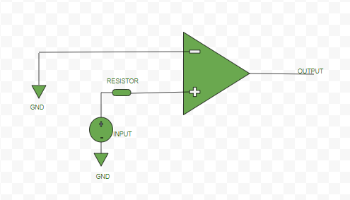
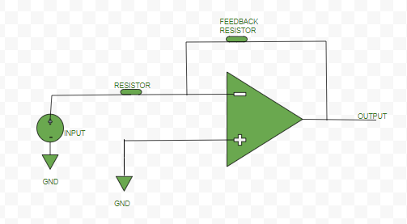
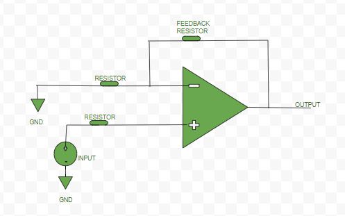

Amplifier is a device that increases the strength of input signal. It can be Voltage amplifiers, whose input is some voltage and output is also voltage but amplified. Current amplifier, whose input is some current and output is also current but amplified.
- Transconductance amplifier, whose input is some voltage and output is current.
- Transimpedance amplifier, whose input is some current and output is voltage.
Operational amplifier (or, op-amp) is a voltage amplification, three terminal electronic device, having two input terminals namely Inverting terminal (marked by ‘-‘ sign in diagrams) and Non-inverting terminal(marked by ‘+’ sign in diagrams) and third terminal is the output terminal. Gain (“A”) of the op-amp = output signal/input signal
Different configurations of op-amp:
Open Loop Configuration –
In this configuration op-amp do not have any feedback.Ideally it has an infinite open loop gain(practically hundreds of thousands of times larger than the potential difference between its input terminals).
#Inverting Mode:

#Non-inverting Mode:

Closed Loop Configuration –
In this configuration of op-amp, negative feedback is used i.e., a portion of the output voltage is applied back to the inverting input.This feedback greatly reduces the gain of the op-amp as compared to open loop gain.Thus, it is a kind of controlled way of amplification.
#Inverting Mode:

#Non-inverting Mode:

Characteristic of ideal op-amp –
- Open Loop gain: Ideally op-amp should have infinite open loop gain (practically it is hundreds of thousands of times larger than the potential difference between its input terminals).
- Input impedance or resistance: Ideally op-amp should have infinite input resistance (practically it should be very high).
- Output impedance or resistance: Ideally op-amp should have zero output resistance (practically it should be very low).
- Bandwidth: Ideally op-amp should have infinite bandwidth (practically it is limited).
Basic terminology –
- Output Offset Voltage: Output of the op-amp should be ideally zero when the voltage difference between the inputs is zero but, practically the output is non-zero, there is a voltage of very small magnitude.This unwanted voltage at output side when no input is given is called Output Offset Voltage.
- Input Offset Current: Magnitude of difference of current entering inverting and non-inverting terminals, when no input voltage is given to op-amp.
Io = |Ib1-Ib2|; Io-Input Offset Current, Ib1 & Ib2-current at input terminals
- Input Bias Current:
I(bias) = (Ib1+Ib2)/2
- Input Offset Voltage: It is the voltage applied deliberately either at inverting or non-inverting terminal of op-amp to nullify the effect of Output Offset Voltage.
V(Input Offset Voltage) = 0 (ideally) V(Input Offset Voltage) = -V(Output Offset Voltage) (practically)
- Common Mode Rejection Ratio: It is the ratio between the differential mode gain (when different signal is applied to both inputs terminals) to the common mode gain(when the signal is applied to just one of the input terminal).
e(Common Mode Rejection Ratio) = |(differential mode gain) / (common mode gain)|
Application – It can be used as:
- Inverting and Non-inverting adder,
- Subtractor,
- Integrator,
- Differentiator,
- Logarithmic amplifier etc.